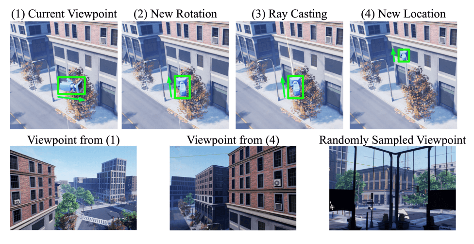

资源
-
Arxiv: [2003.10608] UnrealText: Synthesizing Realistic Scene Text Images from the Unreal World (arxiv.org)
-
GitHub: Jyouhou/UnrealText: Synthetic Scene Text from 3D Engines (github.com)
全文
Abstract
UnrealText，一种通过 3D 图形引擎渲染逼真图像的高效图像合成方法。
3D 合成引擎通过将场景和文本渲染为一个整体来提供逼真的外观，并允许更好的文本区域建议，从而访问精确的场景信息，例如法线甚至对象网格。
1. Introduction
混合合成数据和真实数据只会提高现有合成数据集尚未很好覆盖的少数困难情况下的性能，例如严重模糊或弯曲的文本。
用于场景文本检测的现有合成器遵循相同的范例。
-
首先，他们分析背景图像，例如通过使用现成的模型执行语义分割和深度估计。
-
然后，从分割的区域中提取用于文本嵌入的潜在位置。
-
最后，将文本图像（前景）混合到背景图像中，并根据估计的深度推断感知变换。
然而，使用现成模型对背景图像的分析可能是粗略和不精确的。错误进一步传播到文本提案模块，并导致文本嵌入到不合适的位置。此外，文本嵌入过程不了解整体图像条件，例如场景的照明和遮挡。这两个因素使得文本实例在背景中表现突出，导致合成图像和真实图像之间存在差距。
在本文中，我们提出了一个合成引擎来合成来自三维虚拟世界的场景文本图像。所提出的引擎基于著名的虚幻引擎 4（UE4），因此被命名为 UnrealText。具体而言，文本实例被视为平面多边形网格，文本前景加载为纹理。这些网格被放置在 3D 世界中合适的位置，并与整个场景一起渲染。
与以前的方法相比，所提出的合成引擎本质上具有以下优点：
- 文本和场景一起渲染，实现了逼真的视觉效果，如照明、遮挡和透视变换。
- 该方法可以访问精确的场景信息，例如法线、深度和对象网格，因此可以生成更好的文本区域建议。这些方面在训练检测器时至关重要。
为了进一步挖掘虚幻文本的潜力，我们设计了三个关键组件：
- 一种视图查找算法，该算法探索虚拟场景并生成相机视点，以获得更多样、更自然的背景。
- 一个环境随机化模块，用于定期更改照明条件，以模拟真实世界的变化。
- 一种基于网格的文本区域生成方法，该方法通过探测 3D 网格来为文本找到合适的位置。
本文的贡献总结如下：
- 我们提出了一种全新的场景文本图像合成引擎，它可以渲染来自 3D 世界的图像，这与以前在 2D 背景图像上嵌入文本的方法完全不同，称为 UnrealText。所提出的引擎实现了逼真的渲染效果和高可扩展性。
- 利用所提出的技术，合成引擎显著提高了检测器和识别器的性能。
- 我们还生成了一个大规模的多语言场景文本数据集，这将有助于进一步的研究。
- 此外，我们注意到，许多流行的场景文本识别数据集仅以不完整的方式进行注释，仅提供不区分大小写的单词注释。由于注释如此有限，研究人员无法进行全面的评估，并且往往高估了场景文本识别算法的进展。
2. Related Work
2.1. Synthetic Images
-
SynthText
- 提出通过在背景图像上打印文本来生成合成数据。
- 它首先用现成的模型分析图像，并在语义一致的区域上搜索合适的文本区域。
- 文本植入了基于深度估计的透视变换。
-
VISD
- 为了保持语义一致性，提出使用语义分割来过滤不合理的表面，如人脸。
- 采用了一种自适应的配色方案，使文本符合背景的艺术风格。
最近，使用 3D 图形引擎合成图像在多个领域变得流行，包括
- 人体姿态估计
- 场景理解 / 分割
- 对象检测。
然而，这些方法要么考虑简单的情况，例如
- 在静态背景图像上渲染 3D 对象并随机排列充满对象的场景
- 被动地使用现成的 3D 场景而不进一步改变它
与这些研究相反，我们提出的合成引擎实现了与3D场景的主动和有规律的交互，以生成逼真和多样化的场景文本图像。
本文也是我们之前尝试的 SynthText3D 的续集。
SynthText3D 严格遵循 SynthText 方法的设计。
- SynthText 使用现成的计算机视觉模型来估计背景图像的分割和深度图
- SynthText3D 使用 3D 引擎提供的地面实况分割和深度地图。
SynthText3D 的渲染过程不涉及与 3D 世界的交互，例如对象网格。因此，SynthText3D 至少面临这两个限制：
- 相机的位置和旋转是由人类标记的，限制了可扩展性和多样性；
- 生成的文本区域被限制在相机正面清晰定义的区域内，从而导致不利的位置偏差
2.2. Scene Text Detection and Recognition
介绍场景文本检测与识别。
3. Scene Text in 3D Virtual World
3.1. Overview
UnrealText，它是在 UE4 和 UnrealCV 插件的基础上开发的。合成引擎：
- 生成照片逼真的图像
- 效率高，渲染和生成新的场景文本图像仅需 1-1.5 秒
- 通用且兼容现成的 3D 场景模型。
流水线主要由
- Viewfinder 模块
- 使用相机探索 3D 场景，生成相机视点
- Environment Randomization 模块
- 随机调整环境照明
- Text Region Generation
- 使用随机采样的字体、颜色和文本内容生成文本前景，并将其加载为平面网格
- Text Rendering 模块
- 检索 RGB 图像和相应的文本位置以及文本内容，以制作合成数据集
组成。
3.2. Viewfinder
取景器模块的目的是从 3D 场景的整个空间中自动确定一组合理且不平凡的相机位置和旋转，消除不合适的视点，例如从物体网格内部。
基于学习的方法，如导航和探索算法，可能需要额外的训练数据，并且不能保证推广到不同的 3D 场景。因此，我们转向基于规则的方法，并设计了一个物理约束的 3D 随机行走，配备了辅助相机锚。

在第 2 行中，我们将所提出的方法中的视点与随机采样的视点进行比较。
3.2.1 Physically-Constrained 3D Random Walk
从一个有效的位置开始，物理约束的三维随机行走旨在找到下一个有效且非平凡的位置。与有效相反，例如，如果位置位于对象网格内部或远离场景边界，则位置无效。一个不重要的位置不应该离当前位置太近。否则，新视点将与当前视点相似。所提出的 3D 随机行走使用受物理约束的光线投射来检查物理环境，以确定有效和非平凡的位置。
在每一步中，我们
- 首先随机改变相机旋转的俯仰和偏航值，使相机指向一个新的方向。
- 然后，我们从相机位置向视点的方向投射光线。光线在碰到任何对象网格或达到固定的最大长度时停止。通过设计，从当前位置到停止位置的路径没有任何障碍，即不在任何对象网格内。因此，沿此光线路径的点都是有效的。
- 最后，我们在该路径的第 个和第 个之间随机采样一个点，并将其设置为相机的新位置，这是非常重要的。所提出的随机行走算法可以生成不同的相机视点。
3.2.2 Auxiliary Camera Anchors
然而，所提出的随机行走算法在探索方面效率低下。因此，我们在 3D 场景中手动选择一组 个相机锚点作为起点。在每 步之后，我们将相机的位置重置为随机采样的相机锚点。我们设置 和 。请注意，摄像机锚的选择只需要很少的细心。我们只需要确保覆盖整个空间。每个场景大约需要 到 秒，这是微不足道的，并且不是可扩展性的瓶颈。手动但有效地选择相机与所提出的生成不同视点的随机行走算法兼容。
3.3. Environment Randomization
为了产生真实世界的变化，例如照明条件，我们随机更改场景中所有光源的强度、颜色和方向。除了照明，我们还添加雾条件并随机调整其强度。
环境随机化证明增加了生成图像的多样性，并导致更强的检测器性能。所提出的随机化也有利于模拟到真实域的自适应。
3.4. Text Region Generation
在现实世界中，文本实例通常嵌入定义良好的表面，例如交通标志，以保持良好的易读性。先前的工作通过使用估计的场景信息来找到合适的区域，例如 SynthText 中的 gPb UCM 或 VISD 中的显著性图来进行近似。然而，这些方法并不精确，而且往往找不到合适的区域。因此，我们提出在三维世界中通过探测对象网格来寻找文本区域。
由于检查所有对象网格都很耗时，我们提出了一种两阶段流水线：
- 检索地面实况表面法线图以生成初始文本区域建议；
- 使用对象网格将初始建议投影到三维世界中并在其中进行细化。
最后，我们从细化的提议中抽取一个子集进行呈现。为了避免提案之间的遮挡，我们将它们投影回屏幕空间，并按照打乱的顺序逐个丢弃重叠的区域，直到遮挡被消除。
3.4.1 Initial Proposals from Normal Maps
在计算机图形学中，法线值是垂直于曲面的单位向量。因此，当投影到 2D 屏幕空间时，具有相似法线值的区域往往是一个定义明确的区域，可以嵌入文本。我们通过在表面法线图上应用 像素的滑动窗口来找到有效的图像区域，并检索具有光滑表面法线的区域：任意两个像素之间的最小余弦相似值大于阈值 。我们将 设置为 ，这证明产生了合理的结果。我们随机抽取最多 个不重叠的有效图像区域，以做出初步建议。从普通地图中提出建议是找到潜在和可见区域的有效方法。
3.4.2 Refining Proposals in 3D Worlds
2D 屏幕空间中的矩形初始方案在投影到 3D 世界中时会失真。因此，我们需要首先纠正 3D 世界中的建议。
我们将：
- 初始方案的中心点投影到三维空间中，并在中心点周围的相应网格表面上重新初始化正交正方形：水平边与重力方向正交。边长设置为四边形的最短边，四边形是通过将初始方案的四个角投影到三维空间中创建的。
- 然后，我们交替地沿水平和垂直侧放大宽度和高度。当一个方向的边离开曲面、碰到其他网格或达到预设的最大展开比时，该方向的展开停止。
所提出的细化算法在 3D 世界空间中工作，并且能够在 2D 屏幕空间中产生自然的单应性变换。
3.5. Text Rendering
生成文本图像：给定之前中提出和完善的文本区域，
- 文本生成模块对文本内容进行采样
- 使用特定字体和文本颜色渲染文本图像
- 每行的行数和字符数由字体大小和二维空间中细化建议的大小决定，以确保字符不太小并确保易读性。
为了进行更公平的比较
-
我们还使用了与 SynthText 相同的 Google Fonts 字体集。
-
我们也使用相同的文本语料库 Newsgroup20。
-
生成的文本图像在非笔划像素上具有零 alpha 值，而在其他像素上具有非零 alpha 值。
在三维世界中渲染文本：
- 我们首先对细化的建议执行三角测量，以生成紧密附着在下表面的平面三角形网格。
- 然后我们将文本图像作为纹理加载到生成的网格上。我们还随机采样纹理属性，例如漫反射和镜面反射的比率。
3.6. Implementation Details
- UE 4.22
- UnrealCV
- 8 核 Intel CPU
- NVIDIA GeForce RTX 2070 GPU
- 16G RAM
- ubuntu 工作站
合成速度为每张图像 - 秒，分辨率为 ，具体取决于场景模型的复杂性。
我们从 UE4 官方市场收集了 30 个场景模型。该引擎用于生成包含英语单词的 600K 场景文本图像。在相同的配置下，我们还生成了一个多语言版本，使其成为最大的多语言场景文本数据集。
4. Experiments on Scene Text Detection
4.1. Settings
-
模型
- EAST
-
数据集
- ICDAR 2013
- ICDAR 2015
- MLT 2017
4.2. Experiments Results
- 纯合成数据集
- 混合合成数据
- 混合合成数据 + 真实数据
- 在完整数据集上预训练
- Mask RCNN 的结果
4.3. Module Level Ablation Analysis
消融实验。
5. Experiments on Scene Text Recognition
5.1. Recognizing Latin Scene Text
5.1.1 Settings
ASTER
5.1.2 Experiment Results
效果好。
5.2. Recognizing Multilingual Scene Text
5.2.1 Settings
5.2.2 Experiment Results
效果好。
6. Limitation and Future Work
有几个方面值得深入研究：
- 总的来说，引擎是基于规则和人为选择的参数。自动选择和搜索这些参数可以节省人力，并有助于适应不同的场景。
- 虽然渲染小文本有助于训练检测器，但小文本的低图像质量使识别器更难训练，并损害了性能。设计一种方法，将难以辨认的标记为困难，并将其从损失计算中排除，可能有助于缓解这一问题。
- 对于多语言场景文本，除了拉丁语之外，我们可以轻松访问的脚本可用字体要少得多。为了提高更多语言的性能，研究人员可能会考虑使用基于学习的方法将拉丁语字体转换为其他脚本。
7. Conclusion
在本文中，我们介绍了一种场景文本图像合成引擎，该引擎使用 3D 图形引擎渲染图像，其中文本实例和场景作为一个整体进行渲染。在实验中，我们验证了所提出的引擎在场景文本检测和识别模型中的有效性。我们还研究了提出的引擎的关键部件。我们相信，我们的工作将成为更好的合成算法的坚实基石。